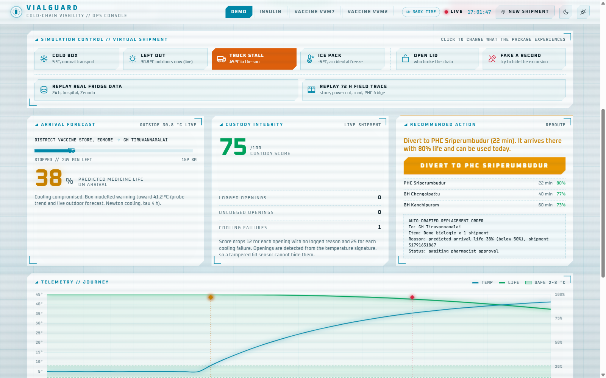
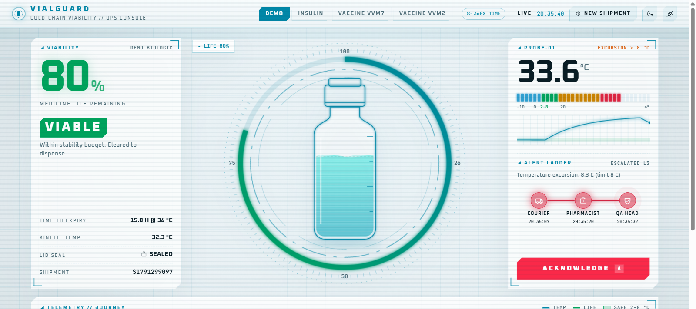
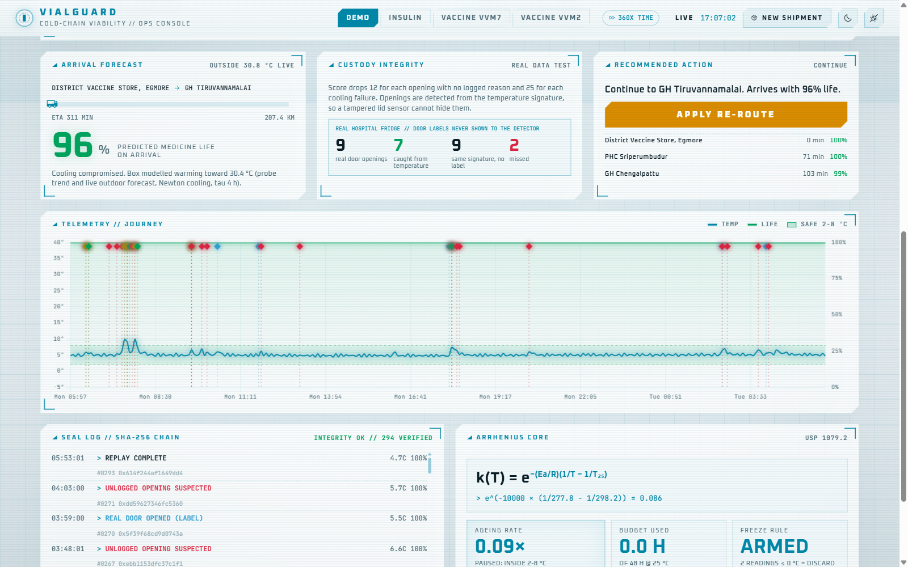
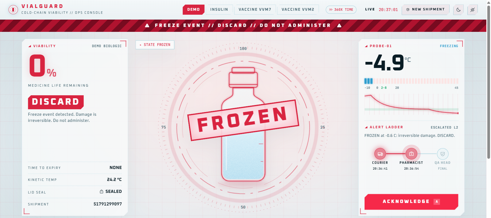

Know if it still works. Before the patient does.
Every cold-chain logger tells you the temperature. VialGuard tells you whether the vaccine or insulin inside is still usable, and what to do if it is not.

The damage is invisible.
A vial that froze last night looks exactly like a good one. So pharmacists guess: throw away good stock, or give a dead dose.
Loggers record, nobody decides
A graph that says "max 38 °C" is not an answer. Is this insulin still usable? Today nobody on the route can say.
Logbooks miss the night
Manual checks happen at 9 AM and 4 PM. A fridge that over-cools at 1 AM reads a normal 4 °C by morning.
No one owns the break
When the cold chain breaks, there is no record of who opened the box or switched off the cooling, and records can be edited later.
Three things. Done right.
VialGuard watches the probe inside the box and turns every reading into a decision.
Medicine life, not degrees
An Arrhenius model, the kinetics used in pharma stability studies, turns heat exposure into remaining life for each drug. Live outdoor weather predicts life on arrival.
- "Insulin: 64% left, usable for 11 h"
- Freezing is instant DISCARD, heat drains gradually
- Different limits for insulin, VVM7 and VVM2 vaccines

Catch tampering, even with a dead sensor
Opening a cold box leaves a temperature signature. VialGuard spots it without a lid sensor, flags cooling shutdowns, and seals every reading in a SHA-256 chain.
- Tested on real hospital fridge data: 7 of 9 openings caught
- Custody score per courier
- Edit one past reading and the log shows a breach

Tell people what to do next
If the shipment will not arrive usable, VialGuard picks the nearest hospital it can still reach with life left, drafts a replacement order, and escalates alerts from courier to pharmacist to QA head.
- One-tap diversion
- Alert ladder until someone acknowledges
- Works offline, syncs sealed records later

Every verdict. One equation. No black box.
Physics for the verdict, machine learning only where real data proves it helps. Every number can be checked, and every source is cited.
Each reading drains the stability budget at rate k(T).
VVM7 check: 7 days at 37 °C = 45 days at 25 °C (WHO definition).
Mean Kinetic Temperature per USP 1079.2.
XGBoost, tested honestlyTrained on 8,316 real fridge readings. On 2,773 unseen ones: 0.14 °C error, 56% better than assuming no change, zero false alarms. Our own simpler rule failed this test, so we say so.
Ask VialGuard"Is the shipment on track?" answered by calling six tools on live data, with every call shown. It cannot invent an answer.
Automated testsModel, detector, forecast, routing, assistant, and parity tests so the phone version and the exported XGBoost trees match the Python reference.
Real data, real weatherDetector calibrated on a public hospital cold-chain dataset (Zenodo, CC BY 4.0). Route forecast uses live Open-Meteo weather.
Runs on a ₹400 chipThe same model compiles for the ESP32, so the verdict works offline inside the box.
Built to scaleProduction design: MQTT, Kafka and InfluxDB in front of the same engine. See architecture.
Open sourceEvery line is public on GitHub.
Built for the last mile.
Enterprise trackers are priced for big pharma. VialGuard is priced for a district store and its PHCs.
Try it
- Full console in the browser
- Simulated and replayed shipments
- Open-source firmware
One smart box
- ESP32 + probe + display hardware
- Viability verdict on the box, offline
- Telegram alerts to your staff
Whole network
- Arrival forecast and re-routing
- Custody scores and audit trail
- Auto-drafted replacement orders
Proposed pricing for a pilot. Hardware cost is the actual bill of materials.
Run it on your phone. Right now.
Every visitor gets their own private shipment. Stall the truck, freeze the vials, try to fake a record. Nothing to install.
Start a shipment